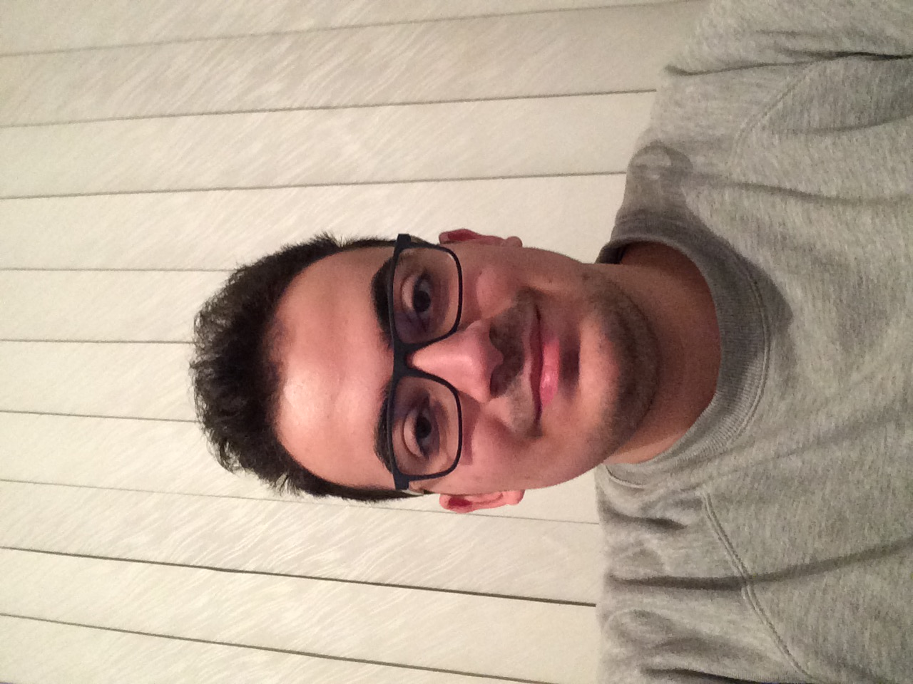

Team Profile
Personal Information
James Tohme
Hello! My name is James Mark Tohme, and my student number is s3897700. I come from Australia and was raised in the Melbourne suburb of Roxburgh Park. I enjoy playing classic video games, listening to pop songs, eating food, and speaking with my friends. My interest in IT swelled greatly as a result of me contributing to the tech-based subjects in Roxburgh College during 2020. I always knew I was going to pursue a career in IT, ever since I was young, learning how computers worked for the first time. What fascinated me the most about IT wasn't so much the exact operations or functions a computer could perform, it was more the paramount variability and options one had when exploring their path in the ever-growing industry. Thanks to my time in Roxburgh College, I was able to pick up essential skills, such as an intermediate knowledge of HTML coding, formatting websites, and a level of understanding on Python thanks to the crash courses I took.
Kenneth Pham

Heya! I’m Kenneth Pham and my student number is s3895797. I am a first generation Vietnamese-Australian; English is my first language while Vietnamese is my second. I also graduated secondary school in 2020 and am undertaking my first year tertiary studies at RMIT, in a Bachelor of IT. While I am studying a STEM subject, I have a passion for the arts, including: drawing and painting, singing and dancing, though some I am more experienced at than others.
My interest in IT stems from seeing programming being used for a game I played. It was not the programming of the game itself but rather individuals from the gaming community who programmed a simulator for the game that introduced me to the applications of IT, which thus sparked my interest in IT. My IT experience thus far is limited to what I have learnt at RMIT, which is to say that prior to my tertiary studies I had scarcely dabbled in IT at all.
Darren Lucky

Greetings! my name is Darren Jonathan Lucky. My student number in RMIT is s3879744. I am Indonesian and I enjoy playing games, meeting new people, learning something new, exercising and learning about cars, whether it is their history or their performance. My main language is English, and I also can speak Indonesian and Chinese. Now, I am currently studying at RMIT University. I am studying for a Bachelor of IT and I am enjoying my experience at RMIT. My interest in IT started when I was still in primary school, and from there my interest grew. I began learning about databases, learning about the computer parts and when I attended foundation school, I learnt about programming, making a game using Scratch and various other topics that I am eager to learn. My IT experience began when I started primary school and I am continuing it until today. I don't really have a lot of IT experience, besides from school and that's about it. I hope I can expand my experience with RMIT.
Oscar Ascione

My name is Oscar Ascione I was born and raised in Darwin, Northern Territory Australia. I am currently studying at RMIT, Bachelor of Information Technology, my student number s3888205. I did my schooling in Darwin and studied at the Essington School Darwin. Throughout high school, I did a lot of acting through the school system and attending acting classes out of school at a youth group called Corrugated Iron. I acted in an advertisement called ‘Speeding There’s No Future In it’. Currently, I am interested in the cyber security aspect of IT, delving into how companies protect their data and the creative ways cyber security attacks have been completed. My IT experience consists of doing work experience with a company called We Fix IT and another company called Power and water, learning about the mapping software they use for their powerlines
Joshua Renshaw

Hi, I am Joshua Renshaw, student number s3896215. I was born in London, England to an English father and a Finnish mother. As a result I am fluent in Finnish, however English is still my first language. I graduated secondary school in 2020 and am now taking a bachelors of IT course at RMIT. I enjoy video games, chess, soccer and cricket and almost anything to do with technology. My interest in IT sparked when I was given an old laptop when I was nine or ten because I wanted to play video games. I quickly determined that said laptop was not powerful enough to play the games I wanted to play, and I therefore decided to learn about computers in the hopes to someday have a more powerful one. Fast-forward to present day, and I have built two fairly powerful computers for myself in the past five years and have gained an interest in many other aspects of IT, including networking hardware and machine learning.
Mark Christopher

Heyyo! My name is Mark Tyrell Christopher, student number s3870180. I was born and raised in Indonesia. I've picked up digital art as a hobby and enjoy doing it on my leisure since I've learned the basics from school.I'm also slowly building my skills as a video editor. I graduated from highschool on 2020 and I’m furthering my education at RMIT where I'm studying for a Bachelor of Information Technology. My interest in IT began very early on when a relative of mine showed a game they made with their small team. I admired the game, as it was the first game I've ever experienced with a story, world, and fleshed out characters. As the technology of video games grew, my interest in video game making grew and I knew a job in the technology industry specifically in the video game industry was what I desired, as video games can build connections between people and give memorable experiences. The skills I have at the moment are those that I’m studying from my subjects at RMIT and hopefully I can learn more to reach my goals.
Group Processes
Our group worked well during assignment 2. We used Discord to communicate and set times for meetings, and then held those meetings using Microsoft Teams, which allowed us to record them. Oscar chaired the meetings as he is the most willing to do so. We quickly settled into a routine of 3 meetings per week, one on Saturday, one on Monday and one on Wednesday. As we had to accommodate Darren’s timezone (indonesia), we usually held our meetings later in the day, making it easier for him to be available for them. We used Canvas and Google Docs to share work, and used Github to create our website. For assignment 3, we are going to follow the same schedule, as it works for everyone in our group. We are also going to use the same tools to share work, with the addition of sending smaller files, such as artwork for our project, through Discord.
Career Plans
James
I will use my time in RMIT to gain all of the necessary skills required for my future endeavour into becoming a Senior Game Developer, as well as obtaining new skills which will help drive my motivation towards the future. I will be able to learn all the ins and outs of computer coding, I want to be able to confidently create and run my own programs without fearing for a latent error, my time at RMIT will make all of this possible. Therefore, working through my three years at RMIT will allow me to refine all of my coding capabilities.
Darren
My ideal career is that I will use my time in RMIT to learn everything about IT to work at a IT store, preferably working to fixing computers and laptop, as I think that is a career I would like to pursue, but if that doesn’t work, I would like to become a 3D printer, as that is something I am really passionate about and hopefully, I can be able to learn about it.
Kenneth
My career plan is to find jobs in order to become financially stable, perhaps financially independant, which is what brought me to IT as the job stability it provides going into an ever-evolving age of technological advancements. Once I reach my goal of financial stability I would become a teacher some point down the line as I have found it makes me feel fulfilled, from the few people I have taught/tutored. Althewhile, I would pursue my hobbies in order to keep myself sane and build up my skills in drawing and painting to commission works as another avenue of income, but still doing it for myself and the joy I get out of being creative. I plan to try and get the most out of my time at RMIT, trying the best I can in my studies and learning what is needed for future jobs. I have yet to look for scholarships due to feeling somewhat overwhelmed, but I plan to do so once I ease into tertiary education.
I have learnt that I enjoy my programming class (and intro to IT), which means I am likely to pursue a career in programming whether that be a python developer or video game programmer
Mark
Even during the times I weighed careers for myself, I've always had the idea that a job as a video game programmer and developer is what I wanted. A position as a video game programmer requires someone to have a background in IT including various programming languages, Write and fine-tune precise computer code that controls the difficulty level of a video game,implementation of artificial intelligence, and most importantly strong communications skills with team members to incorporate their vision into the game.
Oscar
My career plans while studying at RMIT, is to hopefully gain the knowledge and skills to pursue a career in Cyber Security, specifically achieving the role as a Cyber Security analyst. I will need to understand various cyber attack countermeasures and research previous cyber attacks that have been conducted on major corporations and companies. Also, gaining an ethical hacker certificate will be a great stride towards achieving this dream job, as it is considered a great merit in the cyber security community.
Josh
My ideal job is to design networks. To achieve this I will study at RMIT to get a bachelors of Information Technology and hopefully use it to get hired somewhere so that I can gain experience, preferably with networking technology. Gaining hands-on experience will allow me to better understand the requirements of a network, and how best to fulfill them. Additionally, the technical expertise gained during my study at RMIT will allow me to further understand how to effectively set up networks and control software for them.
Comparison
The only ideal job that is not paired in the similarities above is Darren’s ideal job: to be a 3D printing technician. It stands alone as the product of the job is tangible, whereas programs and software are not, at the very least not including the direct/indirect impacts software has on people’s lives if we were considering only the product itself. Speaking of, Josh, Darren and Kenneth’s ideal jobs are to think of or create a means to an end to current problems, while Mark and James’ end products are for the express purpose of entertainment. Our career paths have crossed here at RMIT by virtue of the necessity of the Bachelor of Information Technology and its relevancy to each of our ideal jobs. That aside, only James and Mark seem to be following a similar career path in creating games with code, and to an extent Kenneth who is also looking to program, though for the Telecom industry instead. Others are diving into cybersecurity, networks, and 3D printing that is closely interconnected with business. The overlap of James, Mark and Kenneth's ideal jobs regarding video games, whether as developer or programmer, means they are most likely to be delegated to and can work closely on parts of the project idea regarding game design and implementation.